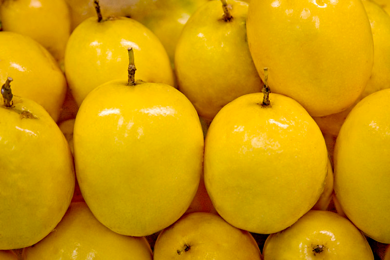

Nomes populares:Maracujá, maracujá-mirim, maracujá-suspiro, maracujá-peroba, maracujá-pequeno, flor-da-paixão
Origem: Provavelmente Brasil

Maracujá é um termo usado para se referir tanto à fruta quanto à planta de diversas espécies do gênero Passiflora. O nome "maracujá" tem origem no tupi-guarani e significa "alimento que se toma de sorvo" ou "alimento em formato de cuia".
As primeiras menções ao gênero Passiflora datam do século XVI, como na obra "Tratado Descritivo do Brasil", de 1587, onde o português Gabriel Soares de Sousa mencionou o maracujá como uma planta com múltiplas utilidades alimentares, ornamentais e medicinais. O maracujá também é conhecido como "fruto da paixão" ou "flor da paixão", uma vez que as estruturas das flores e da planta foram associadas à Paixão de Cristo.
Existem mais de 500 espécies de maracujá, nativas da América Tropical, em países como Brasil, Colômbia, Peru, Equador, Bolívia e Paraguai, embora também haja espécies nativas nas Américas do Norte e Central, Ásia e Oceania. No Brasil, onde mais de 150 espécies são encontradas, o país é considerado um dos maiores centros de diversidade. A cada ano, novas espécies são identificadas e descritas, reforçando que o maracujá faz parte de uma biodiversidade essencialmente brasileira.
Diferentes partes da planta têm usos comerciais: os frutos são consumidos frescos (maracujás-doces), a polpa é usada na fabricação de sucos e néctares (maracujás-ácidos), as flores são utilizadas para ornamentação (maracujás-ornamentais) e as sementes, folhas e hastes são aproveitadas como matéria-prima para as indústrias de condimentos, cosméticos e farmacêutica (maracujás funcionais-medicinais).
A polpa também é utilizada na formulação de produtos mistos, como em combinações com outras frutas, extrato de soja, e na produção de produtos lácteos como iogurtes, além de ser empregada na fabricação de bombons, bolos, sorvetes, mousses, geleias e doces. De maneira artesanal, polpa e sementes são usadas na criação de pratos doces e salgados, muito valorizados na culinária gourmet.